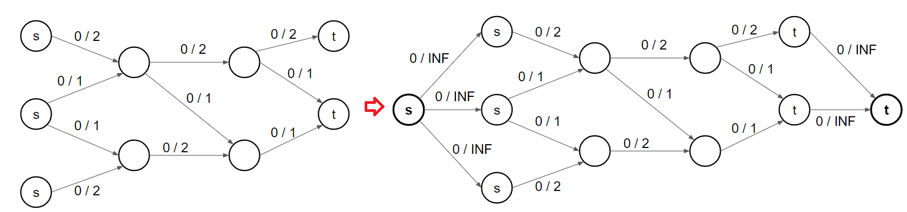

網路流
Flow 問題介紹¶
s-t Flow Network
給一個有向圖，每條邊 (u, v) 都有一個邊權 c(u, v) 代表容量上限。有兩個特殊的點，源點和匯點，在所有種流量中最大的稱為最大流
-
網路(Network)：圖 G = (V, A) 為一有向圖，稱為網路。
-
源點與匯點(Source and Sink)：令一點 s 為源點、一點 t 為匯點，其餘點則為中間點。
-
容量(Capacity)：每條邊上定義一個非負數 c(u, v) 為該邊的容量
-
流量(Flow)：每條邊上定義一個非負數 f(u, v) 為流量
-
網路的流量(Flow of Network)：由源點發出，匯點匯集的總流量 ，匯點匯集的總流量，若其為該網路能產生的最大流量，則稱其為最大流(Maximum Flow)。

Flow 性質¶
-
容量限制(Capacity Constraints): 每條邊 (u, v) 所經過的流量 f(u, v) <= c(u, v)
-
流量守恆(Flow Conservation): 除了源點和匯點，每個點 u 所流入的流量 = 流出的流量
-
斜對稱(Skew Symmetry): 對於所有的 f(u, v) + f(v, u) = 0，由 u 到 v 淨流量加上由 v 到 u 的淨流量必須為零
-
可行流(Positive Flow)：若一個流符合上述三點限制，則稱其為可行流
一些定義¶
剩餘網路 (Residual Network)¶
將每條邊的最大容量扣掉已經流過的流量，即得到剩餘網路。也就是剩餘容量 \(c_f(u, v)=c(u, v)-f(u, v)\)
增廣路徑(Augmenting Path)¶
一條從起點，到終點的路徑，其中每條邊的剩餘容量都 > 0
Maximum s-t flow 演算法¶
模板測試 Kattis - Max flow
給一張 \(n\) 點 \(m\) 邊有向圖，每條邊給定容量 c(u, v)，問 \(s\) 到 \(t\) 的最大流，並輸出每條邊的流量
\(2\le n\le 500, 0\le m\le 10^4, 1\le c(u, v) \le 10^8\)
code
1 2 3 4 5 6 7 8 9 10 11 12 13 14 15 16 17 18 19 20 21 22 23 24 25 26 27 28 29 30 31 32 33 34 35 36 37 38 39 40 41 42 43 44 45 46 47 48 49 50 51 52 53 54 55 56 57 58 59 60 61 62 63 64 65 66 67 68 69 70 71 72 73 74 75 76 77 78 79 80 81 82 83 84 85 86 87 88 89 90 91 92 93 94 95 96 97 98 99 100 101 102 103 104 105 106 107 108 109 110 111 112 113 114 115 116 117 118 119 120 121 122 123 124 125 126 127 | |
Ford–Fulkerson¶
算法概要
- 每次從 s 開始 dfs 找到一條增廣路徑
- 找到路徑中流量最小的邊，並更新剩餘網路（亦對逆向邊做更新）
- 做 1. 2. 直到找不到增廣路徑為止
Ford–Fulkerson 雖然複雜度不佳，但他的精神在後續提到的演算法中都會用到。
每次從 s 開始 dfs 找到一條增廣路徑，找到路徑中流量最小的邊，並將整條路徑填滿，直到找不到 s 到 t 的增廣路徑即結束。
但這樣是否就找到了最大流 ? 我們觀察以下的剩餘網路：
若我們第一次選擇流 A → B → C → D 後，就會再也找不到任何增廣路徑

但最大流明顯是 A → B → D, A → C → D 這兩條。
因為我們沒有給予返回的機會，也就是相當於第一次找到的不是最優解，那怎麼辦 ?
所以，我們要有一個反向邊，來給程式反悔的機會，每條邊都創造一條反向邊，反向邊的初始容量是 0。
當有 f 的流量從 (u, v) 流過時，反向邊 (v, u) 的剩餘流量就加 f

可以發現我們就會流過 A → B → C → D 後，還能再流 A → C → B → D，中間被流過去一次，又流回來一次，剛好抵銷掉。第一次我們流了 1 的流量，第二次我們也是流了 1 的流量，所以求出最大流就是 1 + 1 = 2
最差會需要跑 O(F) 回合，每回合做一次 DFS O(E)。
複雜度 worst case 說明

考慮上面這張圖跑 Ford–Fulkerson，A 為源點，F 為匯點


會發現如果我們這樣找增廣路徑 worst case 每次都只會將剩餘流量最大的邊流掉一單位的流量，所以最差會找 O(F) 次增廣路徑
code
如果是無向圖怎麼處理 ?
跟 dijkstra 一樣，將無向邊看成兩條獨立的有向邊。因為最後只會使用來、回其中一側（若兩側都使用可以互相消掉），如圖
那要怎麼實作 ? 我們對於來、回這兩個有向邊，依照 Ford–Fulkerson，除了原本的方向外，都各自建立一條逆向邊，逆向邊的流量都會是 0，也就是 u 與 v 之間就會產生 4 條邊。輸出答案就看哪一側流過去的比較多，就輸出那個方向，也就是看來、回分別的「逆向邊」的剩餘流量。如下圖
(v, u) 的逆向邊剩餘流量為 2，(u, v) 的逆向邊剩餘流量為 1，因為 2 - 1 = 1，所以最後就是輸出從 (v, u) 流過去 1 單位
Edmond-Karp¶
算法概要
- 每次從 s 開始 bfs 找到一條最短的增廣路徑
- 找到路徑中流量最小的邊，並更新剩餘網路（亦對逆向邊做更新）
- 做 1. 2. 直到找不到增廣路徑為止
Edmonds-Karp 跟 Ford–Fulkerson 只差在每次找的是最短的一條增廣路徑。
一個網路最多只有 O(VE) 條增廣路徑，而找一條增廣路徑需要 O(E) bfs，所以總複雜度為 O(min(VE2, FE))
證明: 最短增廣路的距離非遞減
先假設一些變數
-
設 \(\delta_f(s,x)\) 為增廣前的剩餘網路中，源點到 \(x\) 的最短距離。
-
令 \(v\) 是在某次增廣後 \(\delta_f(s,v)\) 變小的點中距離源點最近的點
-
設 \(\delta_{f'}(s,x)\) 為增廣後的剩餘網路中，源點到 \(x\) 的最短距離。 則可以得到 \(\delta_{f'}(s,v)<\delta_f(s,v)\)
-
令 \(u\) 是在增廣後的剩餘網路中，從源點到 \(v\) 之最短路徑的前一個節點，則 \(\delta_{f'}(s,v)=\delta_{f'}(s,u)+1\)
又因為我們選擇 \(v\) 的方式，因此
\(\delta_{f}(s,u) \le\delta_{f'}(s,u)\)
\(\Rightarrow \delta_{f}(s,u) +1\le\delta_{f'}(s,u)+1\)
又 \(\delta_{f'}(s,v)=\delta_{f'}(s,u)+1\)，所以 \(\delta_f(s,u)+1<\delta_{f'}(s,v)\)
而 \(\delta_{f'}(s,v)<\delta_f(s,v)\)，得 \(\delta_f(s,u)+1<\delta_{f}(s,v)\)
也就是說 \((u,v)\) 邊沒有剩餘流量，因為如果 \((u,v)\) 邊還有剩餘流量的話代表 \(\delta_f(s,v)\le \delta_{f}(s,u)+1\)
\((u,v)\) 邊在增廣前沒有剩餘流量，但增廣後有剩餘流量， 代表在這次增廣時有通過 \((v,u)\) 邊，所以 \(\delta_f(s,v)+1=\delta_f(s,u)\) ，但是這與 \(\delta_f(s,u)+1<\delta_{f}(s,v)\) 矛盾，因此不存在這樣的 \(v\) 點 ⇒ 最短增廣路的距離非遞減
Edmonds-Karp 過程 - 範例
考慮上面這張圖跑 Edmonds-Karp，A 為源點，F 為匯點
找到 A → B → E → F，流量為 1

找到 A → B → C → F，流量為 99

找到 A → D → E → F，流量為 99
找到 A → D → E → B → C → F，流量為 1
A 無法走到 F，總流量為 200，可以發現因為我們每次都挑最短的走，比上面 Ford–Fulkerson 要少跑了好幾輪
code
Dinic¶
算法概要
- 每次從 s 開始 bfs 建立最短路徑圖
- 在這個「最短路徑圖」上 dfs 找增廣路徑，直到找不到為止
- 重複 1. 2. 直到找不到增廣路徑
Dinic 演算法跟 Edmond-Karp 不同的是，每次把所有長度為 k 的增廣路找出來後，一直進行增廣。從 s 到 t 距離為 k 的點會形成最短路徑 DAG，網路上也有人稱這個叫層次圖(level graph)。Dinic 算法每次會先用 bfs 建立最短路徑 DAG，再用 dfs 在 DAG 上不斷的找增廣路，直到找不到，然後再用 bfs 再建立一張最短路徑 DAG，然後再用 dfs 在 DAG 上面不斷的找增廣路，一直做下去。
在最短路徑 DAG 上的增廣路長度最多 O(V)，每次做完一條邊就會從最短路徑 DAG 消失，最多消失 m 條邊，所以找到 blocking flow 會花費 O(VE)。每次 BFS s-t 距離至少增加 1，至多做 V 次 BFS，總時間為 O(min(V2E, FE))
dinic Matching 複雜度為 O(E * sqrt(V))
code
複雜度比較¶
| Flow | Matching | |
|---|---|---|
| Ford-Fulkerson | O(EF) | O(VE) |
| Edmond-Karp | O(min(VE2, FE)) | |
| Dinic（常數級小） | O(min(V2E, FE)) | O(E * sqrt(V)) |
最小割(Min Cut)¶
定義一個 s-t cut \(C = (S \text{-component}, T\text{-component})\) 是將點分成與 s 同一塊或與 t 同一塊。定義 \(C\) 的 cut-set 為 \(\{(u, v) \in E \mid u \in S\text{-component}, v \in T\text{-component}\}\)，使得在 cut-set 的邊都被刪掉後，s 到 t 的 Max Flow 是 0（i.e. s 和 t 不連通）。
s-t cut 的 cost 為 cut-set 內的邊的 capacity 總和，min cut 就是要最小化這個 cost。簡單來說就 Min Cut 是選一些邊，使得刪掉後 s, t 不連通，並且 capacity 最小

以這個例子來說，min cut 就是 2 + 2 = 4（從 t 到 s 的邊雖有被切到，但不計算在 s-t 割，因為對 s 能不能走到 t 的連通性沒有影響）
min cut 為什麼很多圖片都會用一條線來切割，因為我們可以想成把 S-component 與 T-component 拔開，中間就會產生好幾條連通兩側的邊，這條線就代表著 min cut 會切割這些邊
【Max Flow Min Cut Theorm】: max flow = min cut
max flow <= cut
Max Flow 可以想成很多個 disjoint path，任何的 cut 一定都會切到這些 path，所以任何 cut 不會比任何 flow 小。
感性的理解，s-t 若想要流出最大流量，必定會有瓶頸處形成 s-t 最小割
對偶性 Duality(from IOIC 2016)
問題常常是一體兩面，某個求最大值的問題常常等價於另一個求最小值的問題，例如說:
-
「你會的問題裡最難的一個」差不多就是 「你不會的問題裡最簡單的一個」
-
「給你 1000 元你最多可以活多久」跟 「你要活一個月至少需要多少錢？」差不多
那最大流的對偶是什麼呢 ? 一個網路的最大流，就是那些被「堵住」的水管的淨流量，這些堵住的水管會把點分成兩群。
如何輸出一個 mincut¶
min-cut 就是做 max-flow 後，從 s 半邊指到 t 半邊的那些邊。做完 max-flow 後做一次 bfs / dfs，並只走還沒流滿的邊，可以走到的點即為 s 半邊，不能走到的點即為 t 半邊的點，掃過所有的邊檢查兩端點的狀況，輸出符合條件的即為所求。
感性的理解，為什麼可以這樣做，其實可以把 s 開始走還沒流滿的邊視為無關緊要的邊，若碰到一個會流滿的地方就會是瓶頸處
code
求 S-component 點數最少/最多的 mincut
最少: 從 s 開始走沒有流滿的 edges，走到的點就是答案
最多: 從 t 開始走沒有流滿的 edges，沒走到的點就是答案
模板測試 Kattis - Min Cut
給一張 \(n\) 點 \(m\) 邊有向圖，每條邊給定容量 c(u, v)，問 \(s\) 到 \(t\) 的 min cut，並輸出 S-component 內的點
\(2\le n\le 500, 0\le m\le 10^4, 1\le c(u, v) \le 10^8\)
code
1 2 3 4 5 6 7 8 9 10 11 12 13 14 15 16 17 18 19 20 21 22 23 24 25 26 27 28 29 30 31 32 33 34 35 36 37 38 39 40 41 42 43 44 45 46 47 48 49 50 51 52 53 54 55 56 57 58 59 60 61 62 63 64 65 66 67 68 69 70 71 72 73 74 75 76 77 78 79 80 81 82 83 84 85 86 87 88 89 90 91 92 93 94 95 96 97 98 99 100 101 102 103 104 105 106 107 108 109 110 111 112 113 114 115 116 117 118 119 120 121 122 123 124 125 126 127 128 129 130 131 132 133 134 135 136 137 138 139 140 141 142 143 144 145 146 147 148 149 150 151 | |
min cut 應用¶
生產產品問題 NCTUOJ 1138. 成本利潤問題 (Group 31)
有 \(n\) 種工具和 \(m\) 種工作，每種工作需要若干種工具。第 \(i\) 種工具需要花 \(c_i\) 元買下來，第 \(i\) 種工作的報酬為 \(p_i\)，求最大利潤
\(1 \le n, m \le 500,\) 物品需求關係數量 \(\le 2\times 10^4\)
思路
先建圖，左半排擺工具，右半排擺工作，成本和報酬為邊權，若方案 i 需要工具 j，則連邊 (j, i)

因為 min cut 要最小化，切到的就會是要買的工具 C 和不賺的工作 P'。若選完 maximum flow > 0

最後答案就是 \(\sum P\) - (C + P')
我們來驗證為什麼這個問題可以轉換成 min cut，以上圖的工作 p1 來說:
-
不做 p1 → c1, c3 選不選都無所謂
- min cut 的角度: 切 p1 → c1, c3 切不切都無所謂
-
做 p1 → c1, c3 一定要選
- min cut 的角度: 不切 p1 → c1, c3 都一定要被切
最大權閉包問題 NCTUOJ 731. 最大權閉包問題 (Group 19)
給 n 個人的受歡迎程度和每個人的好友列表 (好友並非雙向關係)，若第 i 個人要參加聚會的話則他的所有好友都要參加聚會，要邀請若干個人使得受歡迎程度總和最大
1 ≤ n ≤ 100, 1 ≤ m ≤ 1000
思路
將受歡迎程度為負的當成要付出成本的工具，將受歡迎程度為正的當成可以賺錢的方案，A 要來的話 B 就要來，就很像要用 A 方案賺錢，就要買 B 工具，因此若有關係 A 來的話 B 一定要來，則要連結邊 (B, A)
得到的最小割為要來的負受歡程度的人和不來的正受歡迎程度的人，如同成本利潤問題，用正受歡迎程度的人的總和扣掉最小割即為答案
我們來驗證為什麼這個問題可以轉換成 min cut，假設如果 u 要選 v 就要選，我們有 edge(v, u):
-
不選 u → v 選不選都無所謂
- min cut 的角度: 切 u → v 切不切都無所謂
-
選 u → v 一定要選
- min cut 的角度: 不切 u → v 都一定要被切
再來說明為何 edge 會從左到右。假設如果 u 要選 v 就要選，我們有 edge(v, u)，為左到右的 edge，且 weight = INF，使得 min cut 不可能會切這條邊，所以不會發生 u 有選 v 沒有選的情況
雙機工作分配
有兩台主機 A, B，有 n 個工作被執行，第 i 個工作在 A 主機執行需要耗電 a[i] 單位，在 B 主機執行需要耗電 b[i] 單位，有 m 組工作之間有相依關係，工作 i 與工作 j 若在不同主機執行，需要額外 p(i, j) 單位電力，決定每個工作依序要在哪個主機執行，最小化耗電
1 ≤ n ≤ 500, 1 ≤ m ≤ 10000
思路
mincut 會將點分成兩群，不同群的點之間的 cost 會被 cut 到
S-component 給機器 B, T-component 給機器 A
我們來驗證轉換成 min cut 的正確性，假設每個工作都已經確定好是機器 A 還是機器 B 了:
-
若為機器 A，必須產生 a[i] 的 cost
- i 在 T-component 內，所以在 edge(s, i) 上有 cost = a[i] 的 cut
-
若為機器 B，必須產生 b[i] 的 cost
- i 在 S-component 內，所以在 edge(i, t) 上有 cost = b[i] 的 cut
-
i 在 B 執行 j 在 A 執行，必須產生 p(i, j) 的 cost
- i 在 S-component 內，j 在 T-component 內，所以有 cost(i, j)
TOI 2019 pE. 傳真修復 (fixing)
給一個 n * m 的 grid，每個格子上都有圖黑色或白色。問花費最少多少:
-
若相鄰的格子不同顏色，會產生 1 單位的花費
-
改變一個格子的顏色，會產生 2 單位的花費
\(n\le 30, m\le 30\)
思路
建圖，格子當點，格子與格子間建立無向邊，cost = 1，起點到白點建立有向邊，cost = 2，黑點到終點建立 cost = 1 的有向邊
跟上一題一樣，要將點分兩群，變 S-component 與 T-component。，S-component 代表是白色，T-component 代表是黑色
我們來驗證為轉換成 min cut 的正確性，假設每個格子都已經確定好是白色或黑色:
-
若 i 從白變黑，產生 2 的 cost
- i 在 T-component 內，所以在 edge(s, i) 上有 cost = 2 的 cut
-
若 i 從黑變白，產生 2 的 cost
- i 在 S-component 內，所以在 edge(i, t) 上有 cost = 2 的 cut
-
i 是白，j 是黑，產生 1 的 cost
- i 在 S-component 內，j 在 T-component 內，所以有 cost = 1
二分圖系列¶
二分圖最大匹配¶
問題
給一個二分圖，選一些邊使任意兩條邊都沒有公共的頂點，且數量越大越好，也就是最大匹配，並輸出一組答案
創兩個超級源點和超級匯點，所有邊權都是 1，求 max flow 就是答案。輸出答案即看位於兩排中央流滿的邊，極為所求。

DAG 最小路徑覆蓋¶
問題
給一張 n 點 m 邊的 DAG，最少選幾條路徑才可以蓋住所有的點，且任兩條路徑不能有共通的點，也就是問 disjoint path 數量

不重疊路徑數 + 路徑長總和 = n
對於每個點，有被覆蓋到 iff
-
前面有一條邊連接
-
為 disjoint path 的開頭
因此每個點都貢獻都可以分成上述兩種 case，而點的數量為 n，不重疊路徑數 + 路徑長總和自然就是 n
路徑上會滿足每個點的 in-degree 和 out-degree 至多都是 1，所以我們可以將每個點拆成入點跟出點，進行二分圖最大匹配

二分圖最小點覆蓋¶
問題
給一個二分圖，選擇最少的點來覆蓋所有的邊，且數量越小越好，也就是最小點覆蓋，並輸出一組答案
【Kőnig's theorem】: 在二分圖中，|最小點覆蓋| = |最大匹配|
這邊給出 Kőnig's theorem 的構造法證明，也就是「為何一定找的到一組最小點覆蓋，其數量恰為 max flow」。
最小點覆蓋顧名思義就是要找到一些重要的點，並且這些點要越少越好，考慮 min cut，min cut 可以找到重要的邊，使 s 跟 t 的 max flow = 0，而且數量最小化，我們使用找一組 min cut 的方法，從 s 開始走還沒流滿的邊，找出 S-component, T-component

以上圖來說，我們用 dfs 從 s → 4 → 6 → 1 找出 S-component，其餘的則是 T-component
將 (u ∈ S, v ∈ T) 的用橘色標記出來，即為 min cut
因為依照 min cut 的定義，將橘色這些邊刪除後 s 到 t 的 max flow = 0，代表橘色這些邊相鄰且在中間的點足以支配中間的每一條邊，而又 min cut = max flow，所以最小點覆蓋數量 = min cut = max flow。具體要選哪些中間的點，如下:
-
左邊且在 T-component 中
-
右邊且在 S-component 中

根據 Kőnig's theorem，我們得知最小點覆蓋數量跟最大匹配的數量是一樣的，也就是 max flow。若要輸出答案，那我們就選以下這些點即可
-
左邊跟 mincut 同 t 側的的點
-
右邊跟 mincut 同 s 側的的點
具體為什麼可以這樣做在上面 Kőnig's theorem 的構造法證明中有提到
CSES - Coin Grid
給一個 \(n\times n\) 的 Grid，有些格子上有錢幣。每次可以移除一個 row 或一個 col 的所有錢幣，問最少要幾次操作
二分圖最大獨立集¶
問題
給一個二分圖，選一些點使選的點兩兩不相鄰，且數量越大越好，也就是最大獨立集，並輸出一組答案
定理: 在一般圖上，|最小點覆蓋| + |最大獨集| = n
【證明】: 最小點覆蓋以外都是最大獨立集
每條邊都會被最小覆蓋支配（每條邊至少會有一個點被最小點覆蓋選到），所以剩餘的點跟點之間不可能會有一條邊（有的話代表沒被支配），符合最大獨立集定義
所以答案就是 n - max flow。輸出答案的話，就把最小點覆蓋沒選到的點都選起來
比較¶
-
在二分圖下
- 最大匹配 (MM) = 最小點覆蓋 (MVC)
- 最大獨立集 (MIS) + 最小點覆蓋 (MVC) = n
- 都可以用 max flow 在多項式時間解出
-
在一般圖下
- 最大獨立集 (MIS) + 最小點覆蓋 (MVC) = n
- 最大獨立集,最小點覆蓋 : NP-hard 問題 (目前已知的演算法只能指數時間解出)
- 最大匹配 : P 問題
min cost max flow¶
題目
給一個有向圖，每條邊 (u, v) 都有一個邊權 c(u, v) 代表容量上限，有 cost(u, v)代表在這條邊流過一單位的流所需要的成本，找一個 flow 使 \(\sum f(u,v)\times cost(u,v)\) 最小
概念和 Ford-Fulkson 一樣找增廣路徑，但是每次要找最便宜的。每條邊我們會多紀錄一個成本 cost(u, v)，對於反向邊的成本為負的正向邊成本，退流的時候等價於抵銷成本。因為圖上有負邊，所以必須用 Bellman-Ford 或是 SPFA 來找最短路徑
複雜度跟 Fulk-Fulkerson 就差在一個是 dfs，一個是 Bellman-Ford，而 Bellman-Ford 是 O(VE)，所以複雜度就是 O(F * VE)
code
模板測試 Kattis - Minimum Cost Maximum Flow
給一張 \(n\) 點 \(m\) 邊有向圖，每條邊給定容量 c(u, v) 與 w(u, v)，問 \(s\) 到 \(t\) 的最大流，和 min cost
\(2\le n\le 250, 0\le m\le 10^5, 1\le c(u, v) \le 10^8\)
code
CSES - Distinct Routes II
給一張 n 點 m 邊有向圖，有源點 1 走到匯點 n，每條邊 (u, v) 最多只能走 c(u, v) 次，且經過的 cost 都是 1，最少需要花多少 cost 才能走出 k 條 disjoint path
\(n\le 10^5, m\le 10^5, 1\le k\le n - 1\)
思路
若邊的費用都是 0，只需要判斷 s-t maximum flow 是否大於等於 k
邊有費用，權重都是 1 or -1，可以每次用 Bellman-Ford O(nm) 找到起點終點最便宜增廣路徑，共會跑 k 次，所以是 O(n * m * k)
LOJ #6011. 「网络流 24 题」运输问题
有 \(m\) 個倉庫和 \(n\) 個零售店，第 \(i\) 個倉庫有 \(a_i\) 的貨物，第 \(j\) 個零售店需要 \(b_j\) 的貨物，供需平衡。從第 \(i\) 個倉庫運送一單位貨物到第 \(j\) 個零售店需要 \(c_{i,j}\) 的費用，求滿足供需的最少費用。
\(n, m\le 100\)
思路
使用 MCMF
-
將 s 向 m 個倉庫連邊，capacity = a[i], cost = 0
-
將第 i 個倉庫與第 j 個零售店連邊，capacity = INF, cost = c[i][j]
-
n 個零售店向 t 連邊，capacity = c[i], cost = 0
二分圖帶權最大匹配 CSES - Task Assignment
有 n 個人和 n 個工作，編號 i 的人做工作 j 要 cost(i, j) 的費用，每個工作分配給一個人做，每個人只能做一個工作，最小化總共的費用
\(n\le 200, 1\le c_{i, j}\le 1000\)
思路
用 MCMF，將人與工作個擺兩邊，中間用 capactity = 1, cost = cost(i, j) 的邊連接，s 連接所有人，capacity = 1, cost = 0，所有工作連接 t，capacity = 1, cost = 0
複雜度為 O(n) 次 SPFA，SPFA 複雜度 O(V * E) = O(n * n^2)，所以是 O(n^4)
建模技巧(Flow Graph Modeling)¶
多源點多匯點¶
建立一個超級源點和超級匯點，和原本的源點與匯點連接，capacity 設為無限大

點有流量限制¶
將每個點拆成兩個點，中間用對應的流量限制當邊的 capacity
題目¶
CSES - Distinct Routes
給一張 n 點 m 邊的圖，最多找到幾條 disjoint path
\(2\le n\le 500, 1\le m\le 1000\)
思路
edges capacity 設為 1，跑 max flow